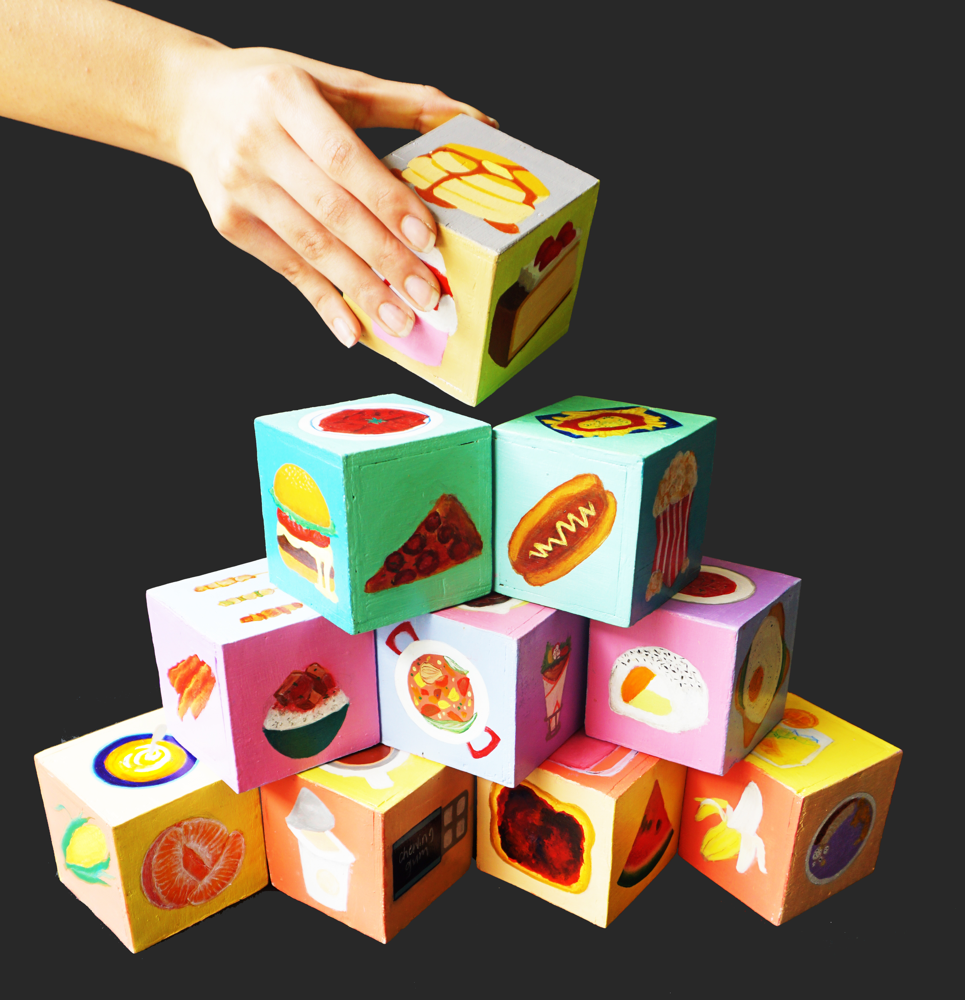
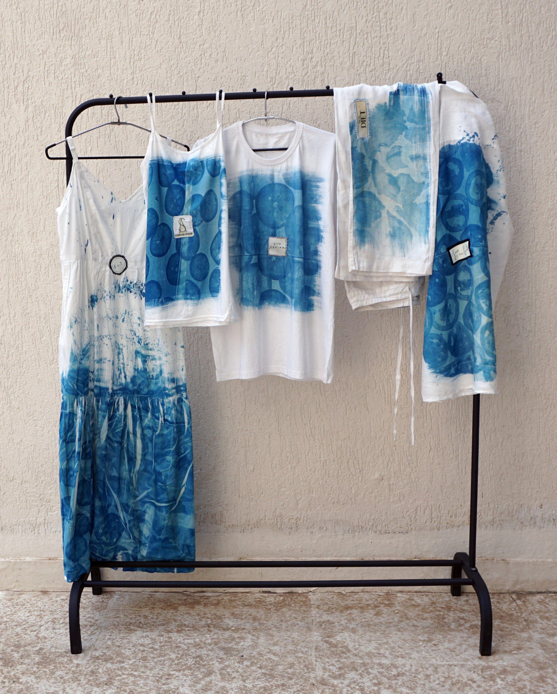

INSTALLATIONS
EAT UP

This piece is about the relationship between food and how we are taught to think about it. The food pyramid gets reconstructed in our heads as we grow up — health takes a back seat to what society expects. I painted that shift onto wooden blocks in the colours and format of a children's toy, because that's often where it starts. Bright, familiar, and a little unsettling up close.
AIRING OUT
DIRTY LAUNDRY
My relationship with food has been an emotional one, and growing up I was taught to keep that quiet. This work pushed back on that. Using cyanotype, I printed food directly onto garments — actually touching it, working with it. The hand-stitched labels read like fashion tags but carry the words and phrases people hear when they're battling issues with food. Clothes on a rack, displayed without apology.

FABRICATION
Textiles from different parts of my life, braided and knotted together. Every memory, experience, and turning point is literally tied in — the wire and knots mark the moments where things changed. The colours reference other works in my practice, each one carrying its own story. It keeps extending because the story isn't finished. A non-representational version of me, in progress.